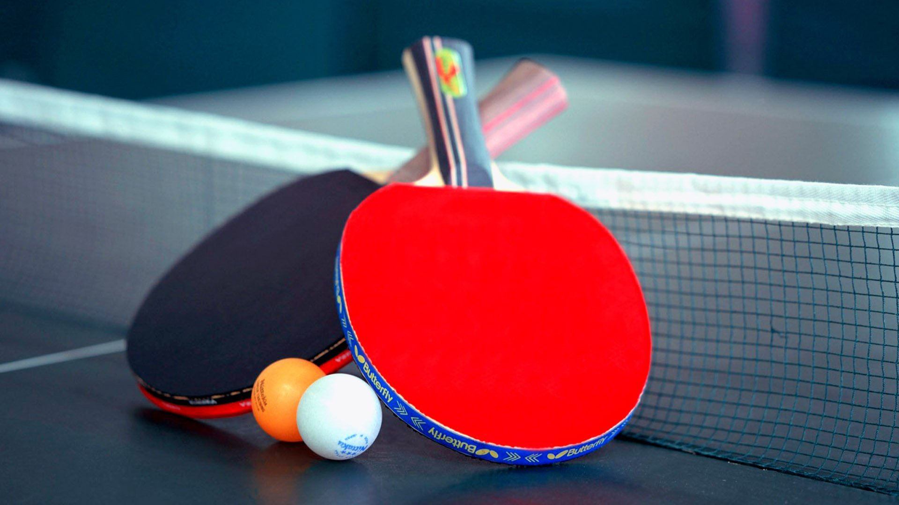

Table Tennis
Table tennis, also known as ping-pong and whiff-whaff, is a racket sport derived from tennis but distinguished by its playing surface being atop a stationary table, rather than the court on which players stand. Either individually or in teams of two, players take alternating turns returning a light, hollow ball over the table's net onto the opposing half of the court using small rackets until they fail to do so, which results in a point for the opponent. Play is fast, requiring quick reaction and constant attention, and is characterized by an emphasis on spin relative to other ball sports, which can heavily affect the ball's trajectory. Owed to its small minimum playing area, its ability to be played indoors in all climates, and relative accessibility of equipment, table tennis is enjoyed worldwide not just as a competitive sport, but as a common recreational pastime among players of all levels and ages. Table tennis has been an Olympic sport since 1988,[3] with event categories in both men's and women's singles, and men's and women's teams since replacing doubles in 2008. Table tennis is governed by the International Table Tennis Federation (ITTF), founded in 1926, and specifies the official rules in the ITTF handbook. ITTF currently includes 226 member associations worldwide. |
 |